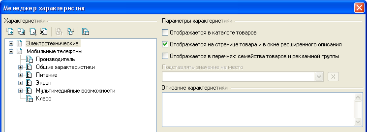
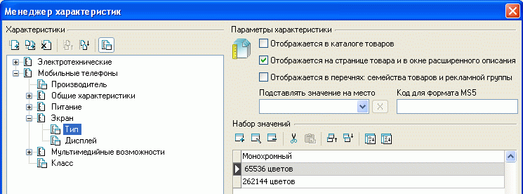
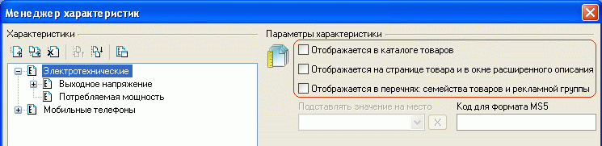
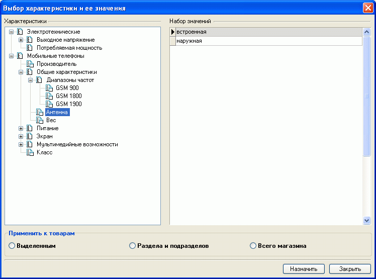

В закладке "Характеристики" карточки товара указываются значения его неизменяемых свойств- характеристик, однако предварительно необходимо эти характеристики и их возможные значения сформировать. Для этого и предназначен менеджер характеристик.
Вызов менеджера характеристик осуществляется нажатием кнопки в главном окне программы, либо кнопкой "Менеджер" закладки "Характеристики" карточки товара, либо выбором пункта меню "Товары - Характеристики - Менеджер характеристик". В левой части окна менеджера отображается дерево характеристик. Характеристики могут группироваться в разделы. Разделы и характеристики можно добавлять, удалять, переименовывать, группировать, сортировать.

Для обозначения того, чем - разделом или характеристикой - является вновь созданный
объект, служит кнопка  ,
расположенная над деревом характеристик. Раздел не имеет своих значений, а только
группирует схожие подразделы или характеристики. Характеристика же имеет набор
фиксированных значений и настроек, для задания которых в правой части окна менеджера
характеристик появляется форма:
,
расположенная над деревом характеристик. Раздел не имеет своих значений, а только
группирует схожие подразделы или характеристики. Характеристика же имеет набор
фиксированных значений и настроек, для задания которых в правой части окна менеджера
характеристик появляется форма:

Значения характеристик можно добавлять, редактировать, удалять, переносить к/от другой характеристики, изменять порядок следования вручную или сортировать автоматически в пределах заданных значений. Дополнительные места размещения значений характеристик могут быть определены в редакторе дизайн-макетов и мест размещения данных.
Значением характеристики может быть ссылка, например, на сайт производителя (значение распознается программой как URL в случае, если оно начинается с "http://" или "ftp://").
Для характеристики возможно задание и редактирование иконки , что удобно для визуализации при выборе по фильтру (например, для характеристики "Производители" значениями будут названия фирм, а иконками могут быть их логотипы). Добавление и редактирование иконки производится формирователем изображений.
Помимо того, для каждой характеристики возможно задание мест ее отображения: "в кaтaлoгe тoвapoв", "нa cтpaницe тoвapa и в oкнe pacшиpeннoгo oпиcaния", "в пepeчнe ceмeйcтвa нa cтpaницe тoвapa", определяющее страницы, где будет указываться конкретное значение данной характеристики при отображении товара.
В случае отсутствия в перечне товаров товара с определенным значением характеристики- это значение характеристики не отображается.
Целесообразно использовать параметры отображения характеристик следующим образом:
Если убрать все опции отображения характеристики, то такая характеристика не будет отображаться нигде, но может быть использована для логической группировки характеристик. Такой подход упрощает доступ к характеристикам товара при их назначении в карточке товара.
Так, в приведенной ниже иллюстрации характеристика "Электротехнические" не будет нигде отображаться, а просто группирует и упрощает доступ к характеристикам товара "Выходное напряжение" и "Потребляемая мощность".

Опция "Пoдcтaвлять знaчeниe нa мecтo" используется при индивидуальной настройке шаблонов для подстановки значения характеристики в определенное место (под ключ). Для задания этих мест размещения используется редактор наборов дизайн-макетов и мест размещения данных.
Опция "Код для формата MS5" используется при импорте-экспорте товаров в формате ms5 для идентификации однотипных характеристик, каждой из которых назначается уникальный код. При импорте данных коды импортируемых характеристик сличаются с кодами существующих и:
Возможна ситуация, когда товар одновременно может иметь несколько значений характеристики. В этом случае создается раздел, в нем как подразделы - характеристики (не значения!) с возможными значениями, а в качестве возможных значений каждой из характеристик указать например "Есть". См.пример в Часто задаваемые вопросы.
В случае, если у ряда товаров присутствует идентичная характеристика, можно назначить эту характеристику сразу всем этим товарам. Для этого в перечне товаров можно выделить товары, подлежащие назначению характеристики, и выбором пункта меню "Товары - Характеристики - Назначить характеристику группе товаров" вызвать окно выбора характеристики и ее значения, после чего указать область применения назначения: к выделенным, товарам раздела и подраздела или товарам всего магазина и выполнить назначение характеристики и ее значения.
